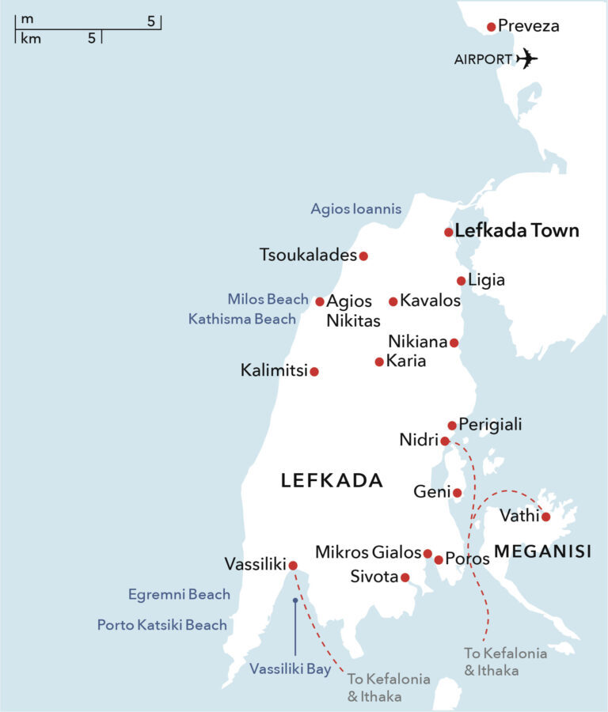
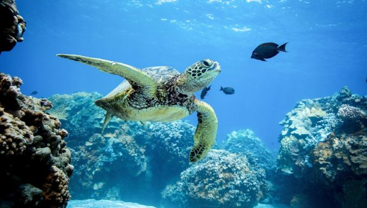

Lefkada
Lefkada is a beautiful island located in the Ionian Sea, off the western coast of Greece.
The island is known for its stunning beaches, crystal-clear waters, and picturesque villages.
Some of the most popular beaches on the island include Porto Katsiki, Egremni, and Kathisma.
Lefkada is my personal favorite place to visit in Greece, and I highly recommend it to anyone looking for a relaxing and
beautiful vacation spot.
History
The Finger Lakes region has a rich history that dates back thousands of years. The area was originally
home to the Iroquois, a group of Native American tribes that lived in the region for centuries.
The arrival of European settlers in the 17th century brought significant changes to the region,
and the area became an important center of trade and commerce. Today, the Finger Lakes region is known for its wineries,
which produce some of the best wines in the United States.

Places to Go
The Finger Lakes region is home to a number of beautiful parks and natural areas that are perfect for outdoor activities.
Some of the most popular parks in the region include Watkins Glen State Park, Taughannock Falls State Park, and Letchworth State Park.
The region is also home to a number of charming towns and villages that are worth exploring, such as Skaneateles, Seneca Falls, and Hammondsport.
Personally, I have been to Watkins Glen many times, and it is one of my favorite places to visit in the Finger Lakes!